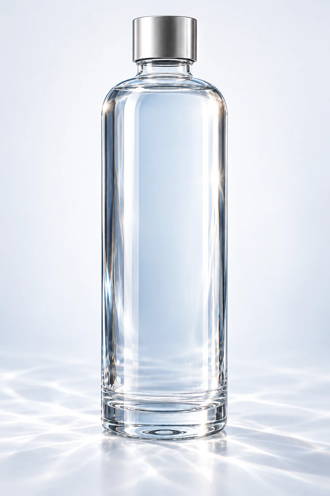

Фактура льда
Неидеальные грани и глубина голубого. Живая фактура вместо орнамента.
✳ ЛЕДНИКОВАЯ ВОДА / ТИШЬ
Из глубины льда.
К простоте настоящего момента.
СЕВЕРНЫЙ СВЕТ / ПЕРВОЕ КАСАНИЕ
У природы свой ритм.
У вас — своё мгновение.

01 — ОБЪЕКТ ТИШИНЫ
Стекло. Вода. Ничего лишнего.
История ТИШЬ
У нашего — северный. Неподвижная вода, глубокий лёд и свет, которому не нужны украшения.
Этот воображаемый пейзаж стал отправной точкой ТИШЬ — концепции воды и предмета вокруг неё.

Вдали от лишнего
Природа.
Без дополнений.
Замысел
Три опоры визуального языка ТИШЬ.
От северного пейзажа — к предмету в руках.
Неидеальные грани и глубина голубого. Живая фактура вместо орнамента.

Плавные плечи, серебристая крышка. Только линии, у которых есть назначение.
Вместо цвета — отражение. Вместо декора — свет, проходящий сквозь стекло.
03 / ИСКУССТВО ПРОСТОГО
ТИШЬ — В ДЕТАЛЯХКрасота, которая открывается
при внимательном взгляде.
Плавные плечи. Чистые линии. Стекло, которое позволяет свету стать частью формы.
Личный ритуал
Убрать телефон. Наполнить бокал.
Вернуться в настоящий момент.